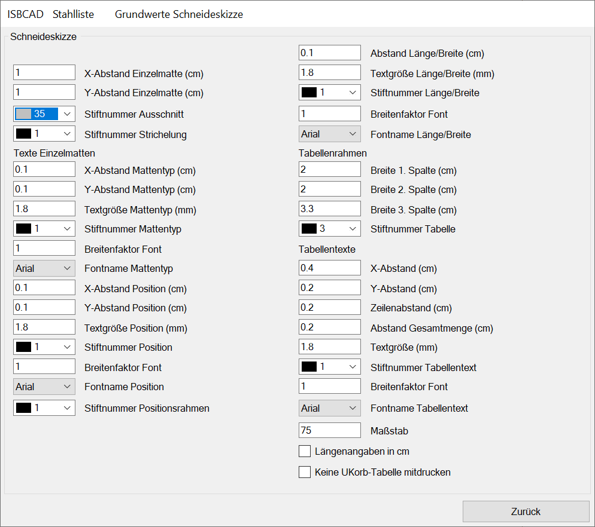
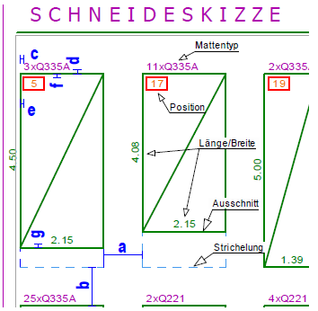
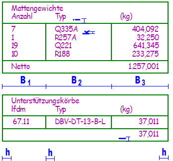

")
")
 /
/ 
Angaben zu der Gestaltung der Schneideskizze.
Optionen im Dialog "Grundwerte Schneideskizze"
 |
Schneideskizze
X-Abstand Einzelmatte (cm) Horizontaler Abstand zwischen den Mattenrechtecken. Y-Abstand Einzelmatte (cm) Vertikaler Abstand zwischen den Mattenrechtecken: „b“. Stiftnummer Ausschnitt Geben Sie die Stiftnummer für die Darstellung der Matten an. Stiftnummer Strichelung Der Restbereich der Matte wird gestrichelt dargestellt. |
Bild: Schneideskizze  |
Texte Einzelmatten
X-Abstand Mattentyp (cm) Horizontaler Abstand des Textes von der Vorderkante Matte: „c“. Y-Abstand Mattentyp (cm) Vertikaler Abstand des Textes von der Oberkante der Matte: „d“. Textgröße Mattentyp (mm) Geben Sie die gewünschte Höhe für den Text an. Stiftnummer Mattentyp Geben Sie eine Stiftnummer für Anzahl und Mattentyp ein. Grundwerte Allgemein: „Farbe und Breite für Druckausgabe“. Breitenfaktor Font Zugehöriger Breitenfaktor. Fontname Mattentyp Wählen Sie einen Font aus der Dropdown-Liste aus. X-Abstand Position (cm) Abstand von der linken Mattenkante zum Positionsrechteck: „e“. Y-Abstand Position (cm) Vertikaler Zwischenraum zwischen Matte und Positionsrechteck: „f“. Textgröße Position (mm) Geben Sie die Größe des Textes ein. Stiftnummer Position Bestimmen Sie die Stiftnummer für die Position. Breitenfaktor Font Zugehöriger Breitenfaktor. Fontname Position Wählen Sie eine Schriftart aus der Auswahlbox aus. Stiftnummer Positionsrahmen Geben Sie eine Stiftnummer für den Rahmen um den Positionstext an. Abstand Länge/Breite (cm) Abstand zwischen Mattenkante und Abmessung. Textgröße Länge/Breite (mm) Geben Sie die Größe für den Mattengrößentext an. Stiftnummer Länge/Breite Geben Sie die Stiftnummer für den Text ein. Breitenfaktor Font Zugehöriger Breitenfaktor. Fontname Länge/Breite Wählen Sie aus der Dropdown-Liste die gewünschte Schriftart aus. |
Tabellenrahmen
Breite 1. Spalte (cm); Breite 2. Spalte (cm); Breite 3. Spalte (cm) Geben Sie Breiten für die Spalten an. Beachten Sie die Länge der Texte und die Schriftgröße. Siehe Bild Tabellenrahmen: B1 … B3. Stiftnummer Tabelle Geben Sie eine Stiftnummer für den Tabellenrahmen an. |
Tabellentexte
X-Abstand (cm) Abstand des Textes von der zugehörigen senkrechten Begrenzung. Siehe Bild: Tabellenrahmen: "h". Y-Abstand (cm) Abstand der Texte von der Unterkante der zugehörigen Tabellenlinie: "i". Zeilenabstand Abstand zwischen den Texten, von Oberkante zu Unterkante: "k". Abstand Gesamtmenge (cm) Abstand der Summenzeile von der Unterkante der Tabelle: "l". Textgröße (mm) Geben Sie eine geeignete Textgröße für die Tabellentexte ein. Stiftnummer Tabellentext Geben Sie eine Stiftnummer für die Texte ein. Breitenfaktor Font Zugehöriger Breitenfaktor. Fontname Tabellentext Wählen Sie eine Schriftart aus der Tabelle aus. Maßstab Geben Sie den Maßstab an, in dem die Matten gezeichnet werden sollen. |
Bild: Tabellenrahmen  |
Längenangaben in cm
Setzen Sie einen Haken in die Checkbox, wenn die Abmessungen der Matten in Zentimeter geschrieben werden sollen.
Keine U-Korbtabelle mitdrucken
Wenn Sie den Haken setzen, wird die Tabelle mit U-Körben nicht gedruckt.
Zugehörige Referenzen: